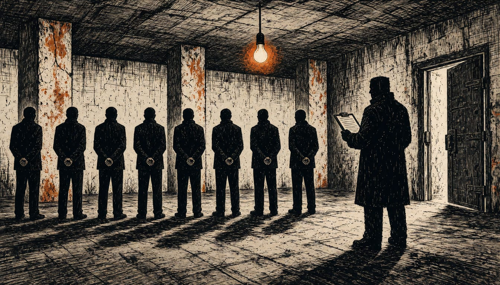

SAJ commander Igor Žmirić held for up to 30 days over torture claims
The Belgrade court ordered detention of the police unit chief, who faces suspicion of abuse and torture. Lawyers say the arrests before the elections look political; the chief prosecutor denies it.

The judge for preliminary proceedings of the First Basic Court in Belgrade ordered SAJ commander Igor Žmirić into detention for up to 30 days. The Special Anti-Terrorist Unit commander faces suspicion of abuse and torture. He joins other detained police officials, including unit commander Marko Kričak, held after two weeks of elections brought the Student List to power.
The case now turns on the timing of the arrests and searches, Belgrade Bar Association president Vladimir Prijovic says. He said on 21 October, four days before the 25 October parliamentary elections, that it raises suspicion police and prosecutors serve political ends. Chief prosecutor Nenad Stefanović answered that he will respect the Constitution and the law. He expects a quick examination of the criminal complaint against him.
The Interior Ministry said the suspects, acting as officers of the JZO protection unit, used force and threats in the Government garage on Nemanjina Street, on 14-15 August 2025. The aim, the ministry said, was to obtain information, and to intimidate and unlawfully punish a larger number of victims. The Internal Control sector, on the First Basic Public Prosecutor's Office order, ordered detention of up to 48 hours for nine people. The nine were eight officers and one former police member. The First Basic Court said detention was ordered so the suspects would not influence witnesses. It also cited the violent crime, punishable by more than five years, and the threat to fair proceedings.
Police also arrested Srđan Ilić from Zemun on the order of the Belgrade Higher Public Prosecutor's Office. He is suspected of organizing and training several people to provoke violence during and after the 25 October 2026 elections. In Novi Sad, five people were arrested in a coordinated action on suspicion they planned violence against Serbia's constitutional order. Days before the vote, officers of the UKP criminal police searched the flat of Andrej Premović, a student at the RAF law faculty in Belgrade, on suspicion of unauthorized access to a protected computer. His lawyer, Ivan Ninić, said police entered the family home like robbers, without a warrant, and got one only afterwards.
The Student List candidates have demanded an investigation into whether chief prosecutor Nenad Stefanović consciously used his powers to favor the defendants. On 21 October, M.A. from Vrnjačka Banja was arrested, on suspicion he planned riots on election day. The Higher Public Prosecutor's Office in Kraljevo ordered the arrest, which pro-regime media reported.